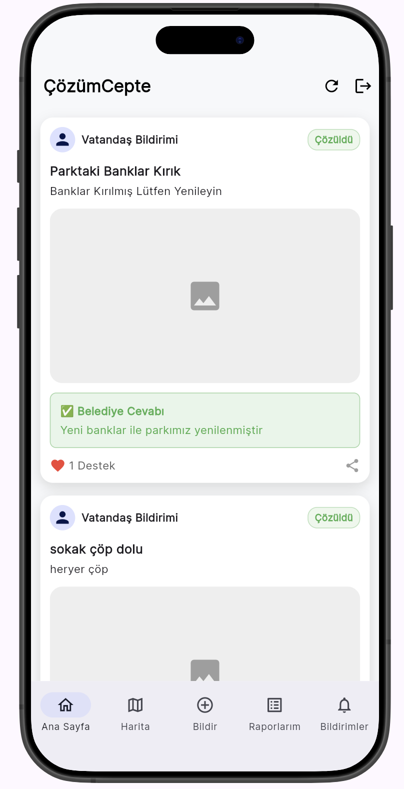
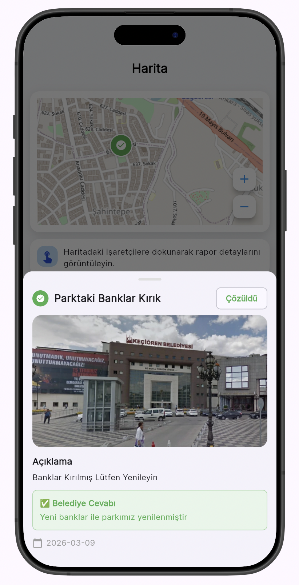
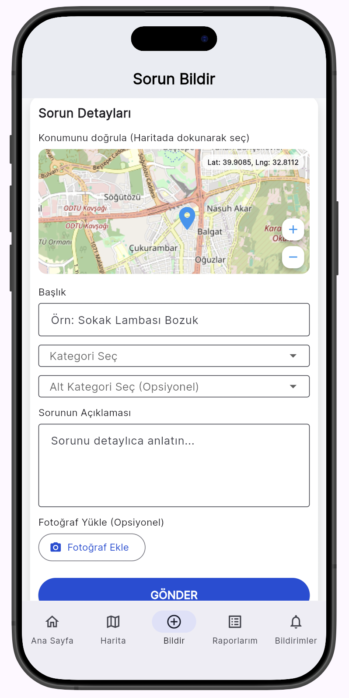
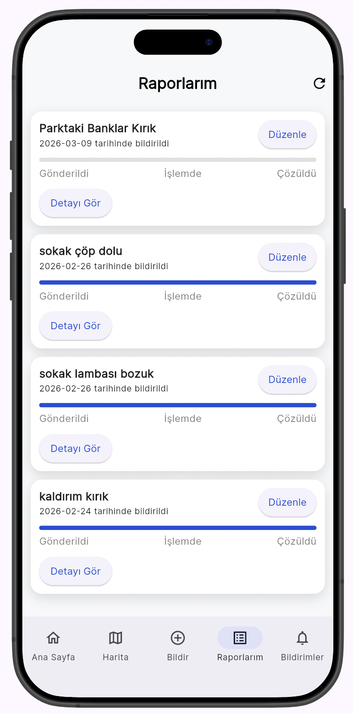
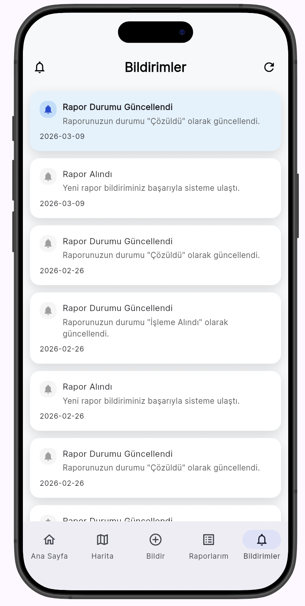
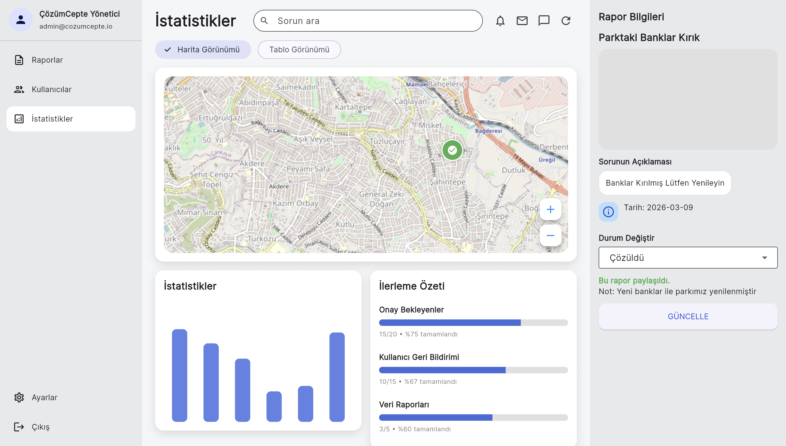
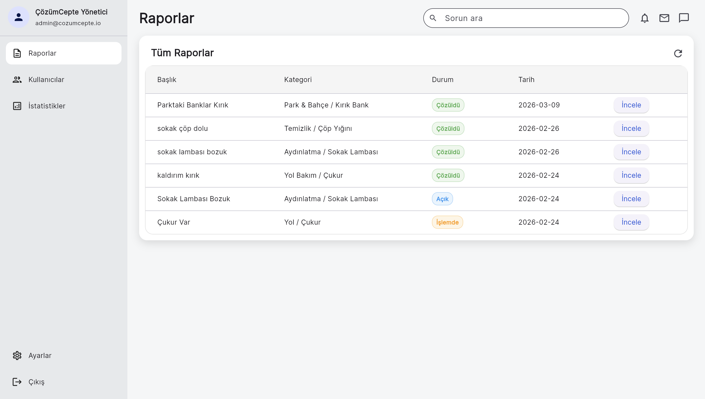

Akıllı Şehir Vatandaş Bildirim sistemine ait mobil ekran görüntüleri ve yönetim paneline ait özet raporlar.






Yönetim paneli genel performans durumu.

Gelen bildirimlerin detaylı filtre ve liste görünümü.